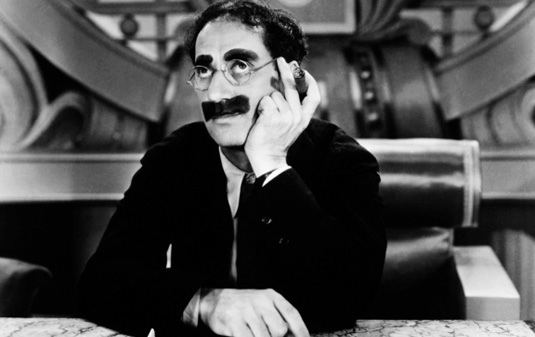
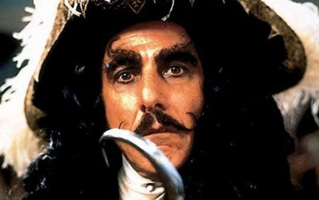

"I'm just a love machine And I won't work for nobody but you I'm just a love machine A huggin', kissin' fiend"
Fell it!|  |
"Groucho Marx in Duck Soup (1933). As history tells it, Groucho’s famed greasepaint mustache and eyebrows stemmed from the star’s 1920s vaudeville work..." |
|  |
"Dustin Hoffman in Hook (1991). The only mustache man in the list to have his greased facial adornment match his signature weapon..." |